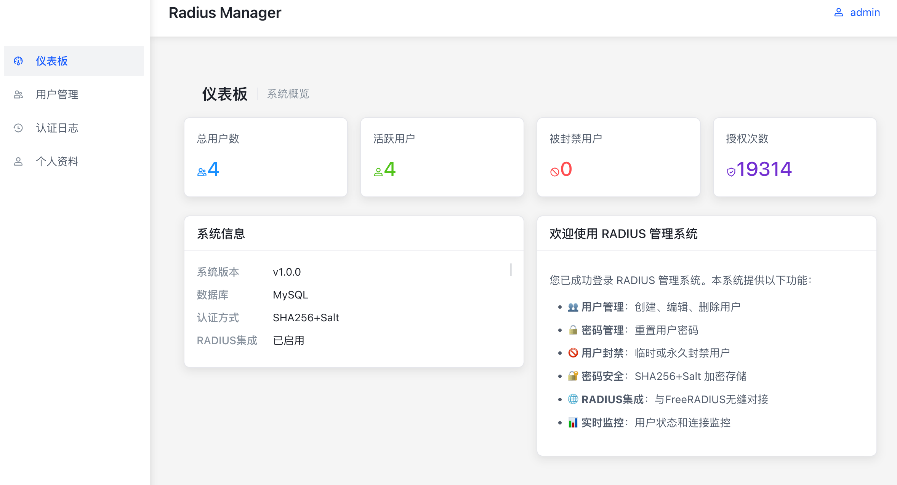
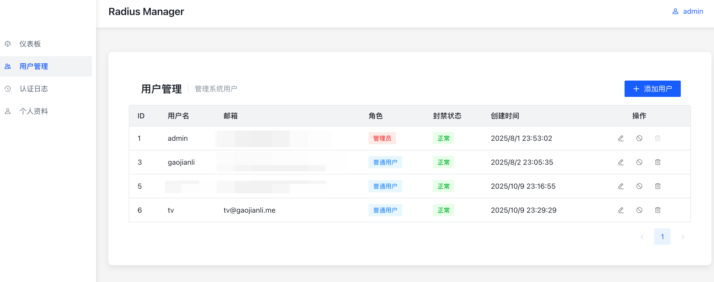
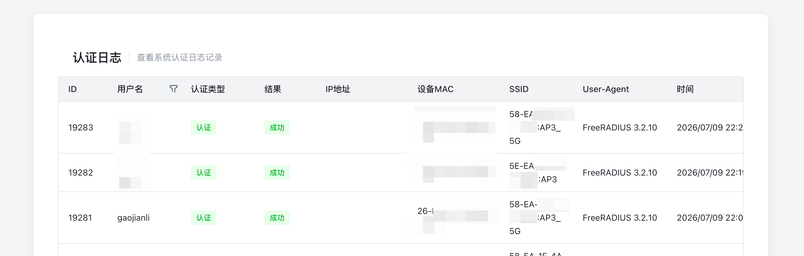
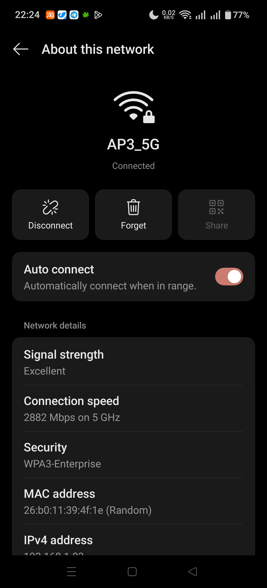

其实这篇文章已经完成很久了，但是直到最近才找到机会把它完善并发表出来。
WPA2/3-Enterprise 第一次接触到这种 Wi-Fi 还是在北邮，当时学校的BUPT-mobile需要同时输入账号密码，令我大感新奇。一晃多年，毕业后住进了自己的出租屋，终于有机会来自己折腾一下网络了。
企业在哪里？ 作为 WPA2 标准中的一对孪生兄弟，Enterprise和Personal 采用完全相同的链路层加密方式和 4-Way Handshake 密钥协商机制。唯一的区别在于身份认证 流程：
WPA2-PSK（Personal）：AP 和所有客户端预先共享一段密码（Passphrase），双方直接用它派生成对主密钥 PMK，然后进入 4-Way Handshake。
WPA2-Enterprise（802.1X 模式）：AP不提供任何认证流程，而是通过 EAP 协议交由 RADIUS 服务器进行身份认证。认证通过后，RADIUS 再派生属于本次会话的 PMK ，用于后续加密。802.1X最初是为有线网络设计的，因此在企业级交换机上，它也用于有线网络认证。在企业管理的场景中，可以根据认证信息的不同把同一交换机上的用户接入到不同的 VLAN 网络（研发，内部，访客）。
认证流程 WPA2-Enterprise 的完整接入过程可以拆成 4 个阶段：
射频关联 ：Client 与 AP 建立射频层连接，形成了一个临时的通道，此时AP 的”受控端口”处于未授权状态，只放行 EAPOL 帧。EAP 认证 ：EAP Client（运行在客户端上）与 RAIDUS 服务器沟通，完成身份验证。Handshake : 使用上一步拿到的 PMK 进行握手正常通信
可以看到，在整个 EAP 流程中，AP 不参与任何认证相关的工作，它只负责把 Client 侧的 EAP 消息封装进 RADIUS 报文送给 Server，把 Server 侧的 EAP 消息剥壳后转交 Client。
因此你甚至可以直接绕过 AP 直接与 RADIUS Server沟通（这在调试的时候非常有用）：
1 eapol_test -ctest.conf -a127.0.0.1 -p1812 -ssecret -r1
EAP 有多种认证方法，常见的有 EAP-TLS、EAP-TTLS、PEAP 等。接下来介绍一下他们的区别：
EAP-TLS ：基于证书的认证方式，客户端和服务器都需要安装证书 。在大企业中其实用的很多，但是在家里面部署就稍微有些繁琐了。部署非常方便，直接在 FreeRADIUS的cert目录下运行make即可。缺点是需要针对每个客户端都生成证书，证书还有过期时间，管理起来比较麻烦。客户端还需要手动安装CA证书和客户端证书，容易被家里人屌。EAP-TTLS ：只有服务端需要使用证书，随后在 TLS 隧道中使用用户名密码进行认证。证书可以直接复用 Web 的SSL证书，因此客户端甚至不需要安装CA证书，使用起来最简单。缺点是部署起来非常复杂，而且文档缺乏，需要自己摸索。北邮的 BUPT-mobile 就是使用的这种方式。PEAP ：微软特供版EAP-TTLS，不支持明文密码，据说 Windows 上可以开箱即用，我没跑起来过。
介绍完背景知识，我们就可以来搭建一下自己的企业级 Wi-Fi 了。我这里选择的方案是 EAP-TTLS + FreeRADIUS + rest.
安装 FreeRADIUS
FreeRADIUS是一款基于BSD协议的开源RADIUS服务器，主要用于宽带账户认证、授权和计费（AAA）管理。它支持多种认证方式，包括 PAP、CHAP、MS-CHAPv1/v2、EAP 等，并且可以与多种数据库（如 MySQL、PostgreSQL、LDAP 等）集成，以实现用户信息的存储和管理。
都什么年代了，还在传统安装，直接 docker 启动：
1 2 3 4 5 6 7 8 9 10 11 12 13 14 15 FreeRADIUS: container_name: radius_FreeRADIUS depends_on: radius_mgnt: condition: service_healthy image: FreeRADIUS/FreeRADIUS-server:latest-alpine networks: - default ports: - 1812 :1812/udp - 1813 :1813/udp restart: unless-stopped volumes: - /mnt/docker/FreeRADIUS_rest:/etc/raddb - /private/certs:/etc/raddb/certs
配置 FreeRADIUS 这部分是最复杂的部分，网上的资料很少，踩了无数的坑。其中还涉及到2.x和3.x版本的差异，很多教程都是过时的。我们这里主要涉及到修改5个文件：clients.conf,mods-enabled/eap,mods-enabled/rest,sites-enabled/default,sites-enabled/inner-tunnel。
clients.conf 这个文件最简单，主要是配置允许访问 RADIUS 的客户端设备，也就是我们的AP。默认只开启了 localhost，我们直接在文件尾部追加一行就行：
1 2 3 4 client gaojianli { ipaddr = 192.168.1.0/24 secret = <YOUR_SECRET> }
模块配置 FreeRADIUS 作为一个企业级软件，支持各种五花八门的认证方式。从最简单的纯密码，到花里胡哨的 yubikey 都支持，这些模块的配置文件都放置在了 mods-available 目录下，默认是未启用状态。
虽然 FreeRADIUS 有名为 mysql 和 python 的模块，可以直接去查询数据库。但是其用户体验还是太超前了，配置起来也极其恶心。好在 FreeRADIUS 还有一个 rest 模块，可以把认证流程外包给外部HTTP接口，我们就可以自己写认证程序了！
我们在启动一个模块之前需要先把它添加到 mods-enabled 目录下:
1 2 ln -s ../mods-available/eap mods-enabled/ ln -s ../mods-available/rest mods-enabled/
eap 这个模块是 FreeRADIUS 的核心模块，负责处理 EAP 协议的认证。
这个文件默认很长，一大堆杂七杂八的东西，一点用没有，还容易漏了导致配错。我们只保留 tls 相关的配置，其他的都删掉。同样都是配置 TLS ，因此其配置内容和 nginx 差不多，就是配置一下证书路径这些信息：
1 2 3 4 5 6 7 8 9 10 11 12 13 14 15 16 17 18 19 20 21 22 23 24 25 26 27 28 29 30 31 32 33 34 35 36 eap eap-home { // 这个名字需要记一下 default_eap_type = ttls // 默认使用 EAP-TTLS timer_expire = 120 ignore_unknown_eap_types = no cisco_accounting_username_bug = no max_sessions = ${max_requests} tls-config tls-common { private_key_file = ${certdir}/xxx.gaojianli.me/xxx.gaojianli.me.key // 私钥路径 certificate_file = ${certdir}/xxx.gaojianli.me/xxx.gaojianli.me.full.cer // 证书路径 ca_file = /etc/ssl/cert.pem // 我证书是合法证书，所以直接用系统CA就行 dh_file = ${certdir}/dh ca_path = ${cadir} cipher_list = "DEFAULT" cipher_server_preference = no ecdh_curve = "prime256v1" cache { enable = no } ocsp { enable = no override_cert_url = yes url = "http://127.0.0.1/ocsp/" } } ttls { tls = tls-common default_eap_type = pap copy_request_to_tunnel = yes use_tunneled_reply = yes virtual_server = "inner-tunnel" } }
rest 这个模块的文档是少之又少，官方文档只写了一个简单的配置示例，其他的都需要自己摸索。配套接口的开发更是一步三个坑，一度把我弄到放弃。最后还是直接找 BYR 的同学抄了作业，才跑通了流程，核心配置文件其实就这两节:
1 2 3 4 5 6 7 8 9 10 11 12 13 14 15 16 17 18 19 20 authorize { uri = "${..connect_uri}/api/v1/radius/authorize" method = 'post' body = 'json' data = '{"username": "%{User-Name}"}' tls = ${..tls} } authenticate { uri = "${..connect_uri}/api/v1/radius/auth" update control{ &REST-HTTP-Header += "X-Device-MAC: %{Calling-Station-Id}" &REST-HTTP-Header += "X-NAS-IP: %{NAS-IP-Address}" &REST-HTTP-Header += "X-Target-SSID: %{Called-Station-Id}" } method = 'post' body = 'json' data = '{"username": "%{User-Name}","password": "%{User-Password}"}' tls = ${..tls} }
配置文件在有现成参考的情况下还是挺直观的，URL、参数什么的都一目了然。其实就是记住一个点，只有 authenticate 才需要密码，authorize 只需要用户名就行。另外可以通过 header 传递一些额外信息给后端，比如客户端的 MAC 地址，AP 的 IP 地址，连接的 SSID 等等。
另外如果你的后端是 HTTPS 的话，记得在 rest 模块的 tls 配置中把 CA 证书路径配置正确，否则会报错。
站点配置 sites-enabled这个和 nginx 的站点配置也差不多，也是需要从 sites-available 目录下启用的。由于前面提到的 EAP 流程中，真实认证是在隧道中进行的，因此我们需要配置两个站点，一个是外部站点，一个是内网隧道站点。在我这里 home 站点就是外部站点，inner-tunnel 就是内网隧道站点。
1 2 3 4 5 6 7 8 9 10 11 12 13 14 15 16 17 18 19 20 21 22 23 server home { listen { type = auth ipaddr = * port = 1812 // 监听地址 limit { max_connections = 16 lifetime = 0 idle_timeout = 30 } } authorize { eap-home { ok = return } rest } authenticate { Auth-Type eap-home { eap-home } } }
这里 authorize 段的配置文件非常反直觉，因此值得拿出来好好讲讲：
首先是 eap-home ，这是在前面 eap 模块中配置实例名，代表了一套证书的配置。RADIUS 服务器会根据对应的 eap 配置文件中的逻辑，执行 EAP 流程。
流程返回 ok后，EAP根据 ok = return 的配置，直接返回到 authorize 段的上一级，也就是跳过了后续的 rest 模块。
如果是非 EAP 流程，比如内部使用 radtest 进行测试的场景，则直接 fallback 到 rest 模块，去调用后端的 HTTP 接口进行认证。
这里就有一个大坑 ：在步骤 2 中隐含了一个逻辑，eap模块在完成认证的同时会设置 Auth-Type = eap-home，这个是后续 authenticate 段的关键，RADIUS 服务器会根据这个值去调用对应的认证模块进行认证。
接下来的 authenticate 就还比较直观了，Auth-Type eap-home 代表了前面设置的认证类型，如果命中这个类型，则会调用 eap-home 模块进行认证（也就是我们在 eap 模块中配置的 URL）。
这个配置文件总体来看最恶心的地方就是省略了 if-else 语句，同时又是 DSL 又是半脚本，导致逻辑非常隐晦；同时 Auth-Type 和 eap 模块的实例名是相同的，进一步增加了排查的难度。整个流程总结下来是这样的：
1 2 3 4 5 6 7 8 9 10 11 12 13 14 15 16 17 18 19 Access-Request 到达 ↓ 进入 server home 的 authorize { } 段 ↓ 按顺序执行第 1 条：eap-home 模块 ↓ eap-home 模块内部逻辑： 1. 检查请求里有没有 EAP-Message 属性 2. 有 → 执行 update control { Auth-Type := eap-home } ← ★ 就在这里设置 └ 返回码 = updated（或 ok） 3. 没有 → 什么都不做，返回码 = noop ↓ 遇到 ok = return，立即从 authorize 返回 ↓ FreeRADIUS 查 control:Auth-Type，值为 eap-home ↓ 进入 authenticate { } 段 ↓ 匹配到 Auth-Type eap-home { eap-home }，调用 eap-home 模块做真正的 EAP 处理
比起home站点的配置，inner-tunnel站点就简单多了，主要是处理 EAP-TTLS 隧道中的 PAP 认证，具体解释可以看注释：
1 2 3 4 5 6 7 8 9 10 11 12 13 14 15 16 17 18 19 20 21 22 server inner-tunnel { listen { ipaddr = 127.0.0.1 // 只监听本地回环地址 port = 18120 type = auth } authorize { if (&User-Password) { // 只有在隧道中才会有密码 update control { &REST-HTTP-Header += "X-Device-MAC: %{Calling-Station-Id}" &REST-HTTP-Header += "X-NAS-IP: %{NAS-IP-Address}" &REST-HTTP-Header += "X-Target-SSID: %{Called-Station-Id}" Auth-Type := rest // 强制制定 Auth-Type 为 rest } } return } authenticate { rest // 前面已经指定了，所以直接调用 rest 模块就行 } }
后端开发 这部分没啥好讲的，就是简单的CRUB而已，需要实现 authorize 和 authenticate 两个接口。
虽然文档说返回值可以是JSON，还可以自定义写入 RADIUS 的属性，但是我实测没成功。最后只能返回 Status Code 200 或者 403，其他设置任何内容都会跑不通，body必须留空，真是奇怪。
如果读者知道为什么，欢迎在评论区交流：
1 2 3 4 5 6 7 8 9 10 11 12 13 14 15 16 17 18 19 20 21 22 23 24 25 26 27 28 29 30 31 32 33 34 35 36 37 38 39 40 41 42 43 44 45 46 47 48 49 50 51 52 53 54 55 56 57 58 59 60 61 62 63 64 65 66 67 68 69 70 71 72 73 74 75 76 77 78 79 80 81 82 83 84 85 86 87 88 func (rc *RadiusController) Authenticate (ctx context.Context, c *app.RequestContext) var req RadiusAuthRequest if err := c.BindAndValidate(&req); err != nil { c.JSON(consts.StatusBadRequest, RadiusAuthResponse{ StatusCode: 400 , Reply: "Invalid request format" , }) return } user, err := database.DAO.User.GetByUsernameForAuth(ctx, req.Username) if err != nil { c.JSON(consts.StatusNotFound, RadiusAuthResponse{ StatusCode: 404 , Reply: "Authentication failed: user not found or disabled" , }) return } if !user.CheckPassword(req.Password) { authLog := &models.AuthLog{ Username: req.Username, AuthType: "authenticate" , Success: false , IPAddress: string (c.GetHeader("X-NAS-IP" )), UserAgent: string (c.UserAgent()), DeviceMAC: string (c.GetHeader("X-Device-MAC" )), TargetSSID: string (c.GetHeader("X-Target-SSID" )), CreatedAt: time.Now(), } go func () database.DAO.AuthLog.Create(context.Background(), authLog) }() c.JSON(consts.StatusForbidden, RadiusAuthResponse{ StatusCode: 403 , Reply: "Authentication failed: invalid password" , }) return } authLog := &models.AuthLog{ Username: user.Username, AuthType: "authenticate" , Success: true , IPAddress: string (c.GetHeader("X-NAS-IP" )), UserAgent: string (c.UserAgent()), DeviceMAC: string (c.GetHeader("X-Device-MAC" )), TargetSSID: string (c.GetHeader("X-Target-SSID" )), CreatedAt: time.Now(), } go func () database.DAO.AuthLog.Create(context.Background(), authLog) }() c.JSON(consts.StatusOK, RadiusAuthResponse{}) } func (rc *RadiusController) Authorize (ctx context.Context, c *app.RequestContext) var req struct { Username string `json:"username" binding:"required"` } if err := c.BindAndValidate(&req); err != nil { c.JSON(consts.StatusBadRequest, RadiusAuthorizeResponse{ Reply: "Invalid request format" , }) return } _, err := database.DAO.User.GetByUsernameForAuth(ctx, req.Username) success := err == nil if !success { c.JSON(consts.StatusForbidden, RadiusAuthorizeResponse{ Reply: "User not found, disabled, or banned" , }) return } c.JSON(consts.StatusOK, RadiusAuthorizeResponse{}) }
除了JSON Body可以读取账号密码外，还可以通过前面注入的 header 来获取客户端的 MAC 地址，AP 的 IP 地址，连接的 SSID 等等信息用于记录访问情况。
测试 后端开发完成部署后，我们先以调试模式启动 FreeRADIUS，看看有没有报错：
如果配置文件有问题，这时应该会报错；如果看到类似这样的输出，就代表 FreeRADIUS 已经准备就绪了：
1 2 3 4 5 6 7 8 9 10 11 12 13 14 15 16 17 18 19 20 21 22 radiusd: #### Opening IP addresses and Ports #### listen { type = "auth" ipaddr = * port = 1812 limit { max_connections = 16 lifetime = 0 idle_timeout = 30 } } listen { type = "auth" ipaddr = 127.0.0.1 port = 18120 } Listening on auth address * port 1812 bound to server home Listening on auth address 127.0.0.1 port 18120 bound to server inner-tunnel Listening on proxy address * port 38071 All secret information will be replaced with the string '<<secret>>' To see the contents of passwords, set `suppress_secrets=no` in the main configuration file. Ready to process requests
接下来我们就可以用 eapol_test 来测试一下了:
1 2 3 4 5 6 7 8 9 10 11 cat > ttls.conf <<EOF network={ key_mgmt=WPA-EAP eap=TTLS identity="test" password="testPwd123" phase2="auth=PAP" } EOF docker run --rm -it --network=host -v $PWD :/supplicant rkolaja/eapol_test -c ttls.conf -a localhost -p 1812 -s testing123
输出：
1 2 3 4 5 6 7 8 9 10 11 12 13 14 15 16 17 18 19 20 21 22 23 24 25 EAPOL: Received EAP-Packet frame EAPOL: SUPP_BE entering state REQUEST EAPOL: getSuppRsp EAP: EAP entering state RECEIVED EAP: Received EAP-Success EAP: Status notification: completion (param=success) EAP: EAP entering state SUCCESS CTRL-EVENT-EAP-SUCCESS EAP authentication completed successfully EAPOL: IEEE 802.1X for plaintext connection; no EAPOL-Key frames required WPA: EAPOL processing complete Cancelling authentication timeout State: DISCONNECTED -> COMPLETED EAPOL: SUPP_PAE entering state AUTHENTICATED EAPOL: SUPP_BE entering state RECEIVE EAPOL: SUPP_BE entering state SUCCESS EAPOL: SUPP_BE entering state IDLE eapol_sm_cb: result=1 EAPOL: Successfully fetched key (len=32) PMK from EAPOL - hexdump(len=32): ab 24 31 2a 63 65 08 95 8d 6b a0 55 a3 9b 0b d6 89 02 80 35 3d 1a e4 21 54 4a 51 bb 1c a6 07 a0 No EAP-Key-Name received from server WPA: Clear old PMK and PTK EAP: deinitialize previously used EAP method (21, TTLS) at EAP deinit ENGINE: engine deinit MPPE keys OK: 1 mismatch: 0 SUCCESS
同时日志出现 Access-Accept 便说明认证成功：
1 2 3 4 5 6 7 8 9 10 11 12 13 14 15 16 17 18 19 20 21 22 23 24 25 26 27 28 (5) rest: Adding reply:REST-HTTP-Status-Code = "200" rlm_rest (rest): Released connection (0) Need more connections to reach 10 spares rlm_rest (rest): Opening additional connection (5), 1 of 27 pending slots used rlm_rest (rest): Connecting to "http://radius_mgnt:8080" rlm_rest (rest): Closing expired connection (4) - Hit idle_timeout limit rlm_rest (rest): Closing expired connection (3) - Hit idle_timeout limit rlm_rest (rest): Closing expired connection (2) - Hit idle_timeout limit rlm_rest (rest): You probably need to lower "min" rlm_rest (rest): Closing expired connection (1) - Hit idle_timeout limit (5) [rest] = ok (5) } # authenticate = ok (5) } # server inner-tunnel (5) Virtual server sending reply (5) REST-HTTP-Status-Code = 200 (5) eap_ttls: Got tunneled Access-Accept (5) eap-home: Sending EAP Success (code 3) ID 175 length 4 (5) eap-home: Freeing handler (5) [eap-home] = ok (5) } # Auth-Type eap-home = ok (5) session-state: Discarding attributes for server home (5) Sent Access-Accept Id 5 from 172.16.2.4:1812 to 192.168.1.1:38284 length 164 (5) MS-MPPE-Recv-Key = <<< secret >>> (5) MS-MPPE-Send-Key = <<< secret >>> (5) EAP-Message = 0x03af0004 (5) Message-Authenticator = 0x00000000000000000000000000000000 (5) User-Name = "tv" (5) Finished request
部署 最后我是让GPT帮忙写了一整套前后端，代码开源在这里：https://github.com/Gaojianli/Radius-Manager ，支持了多用户管理和日志功能，可以直接拿去用：



docker-compose 部署文件仅供参考：
1 2 3 4 5 6 7 8 9 10 11 12 13 14 15 16 17 18 19 20 21 22 23 24 25 26 27 28 29 30 31 32 33 34 35 36 37 38 39 40 41 42 43 44 45 46 47 48 49 50 51 52 53 54 55 56 57 58 59 60 61 62 63 64 services: freeradius: container_name: radius_freeradius depends_on: radius_mgnt: condition: service_healthy image: freeradius/freeradius-server:latest-alpine networks: - default ports: - 1812 :1812/udp - 1813 :1813/udp restart: unless-stopped volumes: - /mnt/docker/freeradius_rest:/etc/raddb - /etc/certs:/etc/raddb/certs:ro mariadb: container_name: radius_mariadb environment: MARIADB_DATABASE: radius_mgnt MARIADB_PASSWORD: radius123 MARIADB_ROOT_PASSWORD: radius123 MARIADB_USER: radius expose: - "3306" image: mariadb:lts-ubi9 networks: - default restart: unless-stopped volumes: - mariadb_data:/var/lib/mysql radius_mgnt: container_name: radius_mgnt_app depends_on: - mariadb environment: DB_HOST: mariadb DB_NAME: radius_mgnt DB_PASSWORD: radius123 DB_PORT: 3306 DB_USER: radius DEFAULT_ADMIN_EMAIL: admin@gaojianli.me DEFAULT_ADMIN_PASSWORD: 1145141919810yajuu DEFAULT_ADMIN_USER: admin JWT_SECRET: 1145141919810yajuu SERVER_PORT: ":8080" healthcheck: interval: 10s retries: 5 start_period: 20s test: - CMD - nc - "-z" - localhost - "8080" timeout: 5s image: ghcr.io/gaojianli/radius-manager:latest networks: - default restart: unless-stopped version: "3.8" volumes: mariadb_data: {}
最后在路由器上配置好加密方式和 RADIUS 服务器的 IP 地址和端口，恭喜你，你已经拥有了自己的有病企业级 Wi-Fi 了！
1 2 3 option encryption 'wpa2' option auth_server '192.168.1.1' option auth_secret 'your_secret_key'
